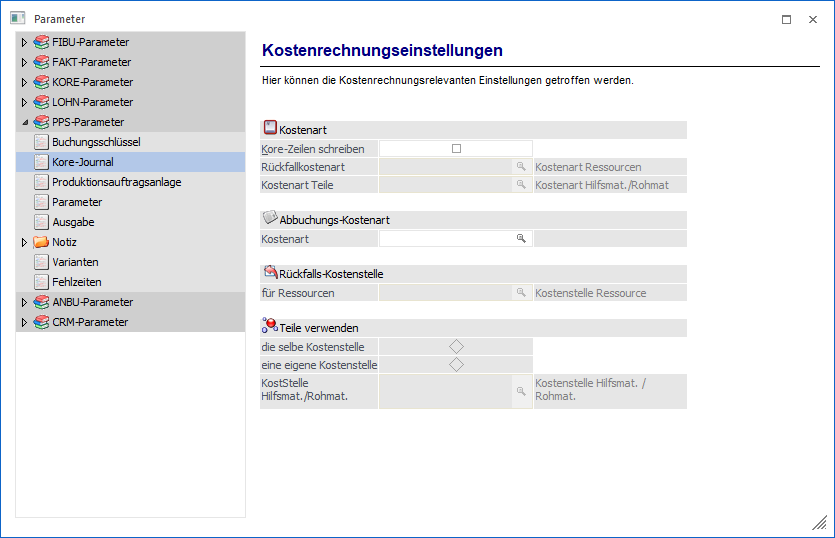
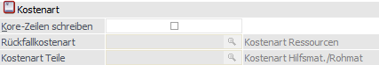
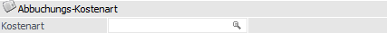
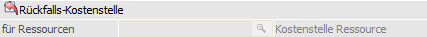
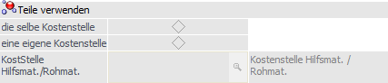

Über den Bereich "PPS-Parameter - Kore-Journal" können die relevanten Einstellungen bezüglich der Kostenrechnung vorgenommen werden.
Hinweis
Standardmäßig wird das Fenster in einem "Lesemodus" geöffnet, d.h. es können die bestehenden Einstellungen kontrolliert, Änderungen allerdings nicht durchgeführt werden. Hierfür muss zunächst mit Hilfe des Buttons "Bearbeiten" der "Bearbeitungsmodus" aktiviert werden. Alternativ kann diese Aktivierung auch über das Kontextmenü der rechten Maustaste (Funktion "Applikation xxx bearbeiten") erfolgen.

Kostenart

Ø Kore-Zeilen schreiben
Ist diese Checkbox aktiv, so werden bei der Produktionsendmeldung automatisch die entsprechenden Kore-Zeilen geschrieben.
Ø Rückfallskostenart
Die Kostenart, die für die Übergabe der Produktionszeilen in die Kostenrechnung notwendig ist, kann bereits in den Stammdaten der Ressource hinterlegt werden. Ist dies nicht der Fall, so wird bei der Übergabe in die Kore auf diese Rückfallskostenart für die Ressourcen zugegriffen.
Ø Kostenart Teile
Hier wird die Kostenart hinterlegt, die für einzelnen Komponenten bzw. Materialien bei der Übergabe verwendet werden soll.
Abbuchungs-Kostenart

Ø Kostenart
Hier kann jene Kostenart angegeben werden, die bei der Entlastungsbuchung verwendet werden soll. D.h. wenn ein Halbfertig-Artikel aufs Lager zugebucht wurde, dann werden die entstandenen Kosten auf die gewählte Kostenstelle mit den Zubuchungs-Kostenarten zugebucht. Wird dann später der darüber liegende Produktionsartikel endgemeldet, dann wird die obig genannte Kostenstelle wieder entlastet. Die dafür verwendete Kostenart kann hier hinterlegt werden.
Rückfalls-Kostenstelle

Ø Rückfalls-Kostenstelle für Ressource
Die Kostenstelle, die für die Übergabe der Produktionszeilen in die Kostenrechnung notwendig ist, kann bereits in den Stammdaten der Ressource hinterlegt werden. Ist dies nicht der Fall, so wird bei der Übergabe in die Kore auf diese Rückfallskostenart für die Ressourcen zugegriffen.
Teile verwenden

Ø Teile verwenden
Hier stehen zwei Auswahlmöglichkeiten zur Verfügung:
ü die selbe Kostenstelle
Es kann
die selbe Kostenstelle wie für die Ressourcen verwendet.
ü eine eigene Kostenstelle
Es
kann eine eigene Kostenstelle hinterlegt werden